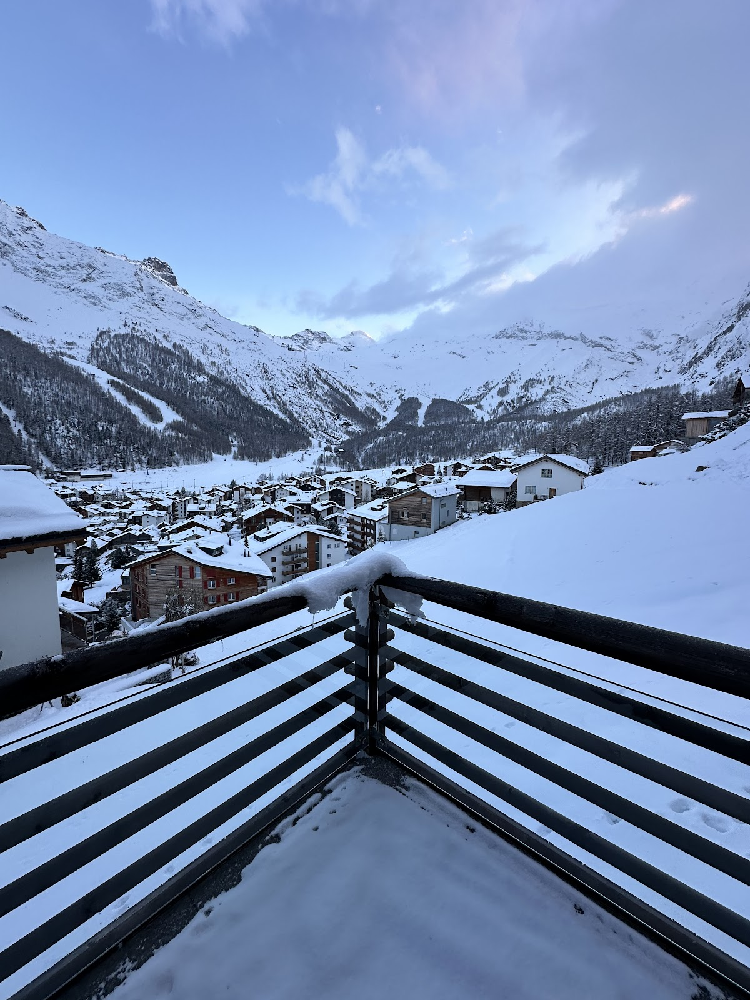
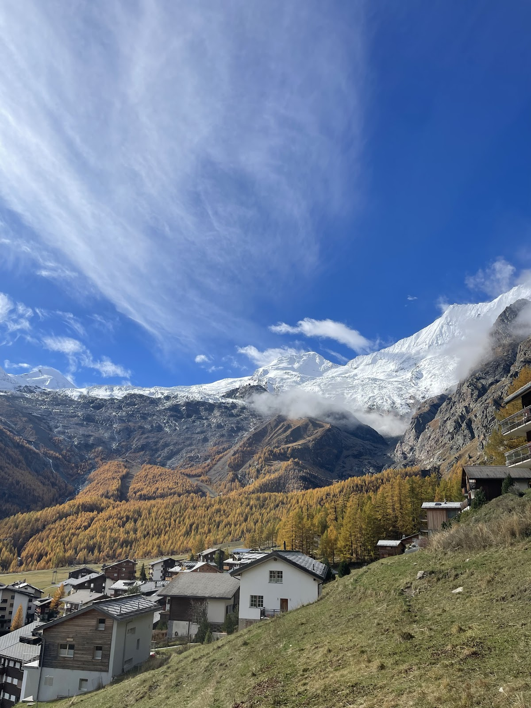
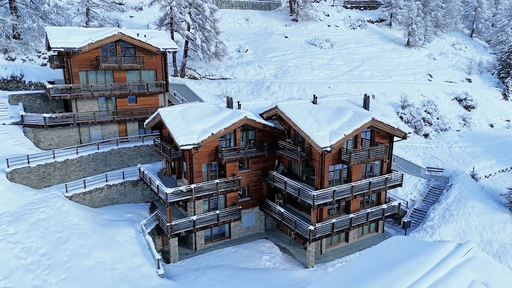

Panoramabalkon
Vom Balkon der Ferienwohnung blicken Sie auf zahlreiche 4000 Meter hohe Berge rund um Saas-Fee.

Das Chalet Pinnacle bietet eine geräumige Ferienwohnung am Hohneggweg 32 in Saas-Fee. Hier übernehmen Sie den Service selbst und genießen viel Platz. Besonders geschätzt wird der Balkon mit Ausblick auf zahlreiche 4000er. Die Ausstattung umfasst alles, was Sie für einen angenehmen Aufenthalt benötigen. Die ruhige Lage und das Panorama machen diese Unterkunft zu einem besonderen Ort für Bergliebhaber. Eine eigene Website gibt es derzeit nicht.

Vom Balkon der Ferienwohnung blicken Sie auf zahlreiche 4000 Meter hohe Berge rund um Saas-Fee.
Die Wohnung bietet großzügigen Raum, damit Sie sich auch bei längeren Aufenthalten wohlfühlen können.
Als Ferienwohnung übernehmen Sie den Service selbst und gestalten Ihren Aufenthalt ganz nach Ihren Wünschen.

Die Ferienwohnung im Chalet Pinnacle bietet viel Platz und eine umfassende Ausstattung. Sie finden alles, was Sie für Ihren Aufenthalt benötigen. Besonders hervorzuheben ist der Balkon mit direktem Blick auf die umliegenden Berge.
Das Chalet Pinnacle liegt am Hohneggweg 32 in Saas-Fee. Die Umgebung ist geprägt von hohen Gipfeln und ruhigen Straßen. Vom Balkon aus sehen Sie zahlreiche 4000er der Region.
Für Fragen oder Buchungsanfragen melden Sie sich bitte direkt. Der persönliche Kontakt hilft Ihnen, das Passende zu finden.
Auf der Karte ansehen